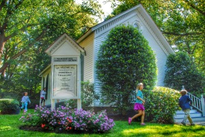

We offer three programs geared and customized to the age group of your children. The programs are detailed below, but before discussing the differences between the programs, we also want you to know the common approaches and themes of our programs. There are three foundational goals for our youth education program:

Building on these foundations, the three programs we offer are the following:
Sunday School (grades K-4) during 10:30 Worship Service
Our Sunday School is led by Tracy Castelli, a trained Montessori teacher and mother of two. This is Tracy’s third year leading our Sunday School. This year, Tracy will be building on some of the techniques in Godly Play to design a customized curriculum that is based on virtues (e.g. friendship, courage, etc.) The class will discuss what that virtue means and how it is represented through a bible story. The children will also have an opportunity to share an experience in their life that is representative of the virtue. The goal is use the virtues and the Bible to connect our religious education to our everyday life and offer our children the tools to navigate our world. A listing of session topics is attached to this document.
SPARK, or Spiritual Path and Righteous Knowledge, (grades 5-8) during 10:30 Worship Service
Youth Initiative (grades 9-12) on the First and Third Sundays, 6pm at THCC
We are excited about Youth Initiative this Fall. The program, now in it’s fourth year, will continue to be led by the team of Carter Via, Jon Morgan and Kate Cummiskey. As always, it is our intention to create a safe environment, a place for open and honest dialogue, an opportunityto reflect on our spiritual lives, and the presence of a supportive community. Beginning on September 18 and then on the first Sunday of every month, we will meet at THCC (6:00-7:30 p.m.) for our regular meeting. On the third Sunday of every month, we are going to collaborate with Gary and the Youth Program at the First Congregational Church in Darien (FCCD) to offer an informal, non-traditional, and fun worship service. The youth at both churches will be actively involved in the design and execution of these services, and initially they will take place at FCCD from 5:00-5:45 p.m. See below for an outline of this Fall’s calendar.
Confirmation (grades 8 and 9) during the 10:30 Worship Service, Location TBA
In addition to the three programs designed for various age groups, this year we will also be offering a Confirmation programs for our 8th and 9th graders. The program will be led Rev. Carter Via and will include the following: four 45-minute sessions that will take place during the church service in October, November, February and March. The topics for these sessions are:
In addition, our confirmands will complete a personal faith statement and meet with Carter individually to discuss it. We also expect our confirmands to participate in at least one church-sponsored service event (e.g. Midnight Run, Feed My Starving Children, Homefront). Candidates who complete the program will be confirmed at our Youth Sunday service in late May. If your son or daughter is interested in the confirmation process and is in 8th or 9th grade, please speak to Carter.
Conclusion
If you have further questions or need more details, feel free to reach out to Carter, Jon Morgan or any of the individual teachers. We have been so impressed by the passion around youth education at Talmadge Hill and we expect to have a great year.
Bible Studies for Adults